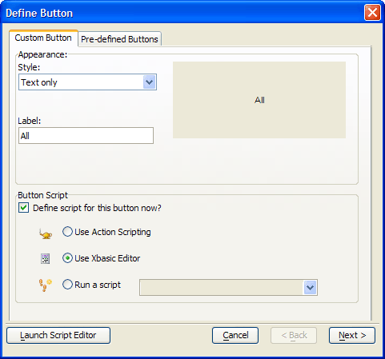

Creating a Button that Calls an Xbasic Script
The Button4 button provides a quick way to reset the form's record selection so that it includes all the records of the Customer table.
Procedure: Configuring the Button4 Button
The following procedure assumes that the developer has opened the form in the Form Editor. Follow these instructions to create a button similar to Button4 :
Place a button on the form.
On the resulting Define Button dialog box enter "All" in the Label field.
Select Use Xbasic Editor.
Click the Next > button.
Click the Launch Script Editor button to display the Code Editor and to start writing Xbasic code.
Close the Code Editor and save your code (refer to ((|#Procedure__Configuring_the_Button4_Button|Button4 OnPushEvent)) ).
Click the Finish button.

Xbasic Code Run by the Button4 OnPush Event
The Button4 OnPush event button resets the MULSTBTN1 multi-state button so that no letters are selected, refreshes Browse1 to display an unfiltered list, and refreshes the fields bound to the Customer table to display the first record listed in Browse1.
|
dim tbl as P dim indx as P dim count as N
tbl = table.current() tbl.order(searchby.text, searchby.text + " <> ''") mulstbtn1.text = "1"
indx = tbl.index_primary_get() count = indx.records_get() if (count > 0) then topparent.allow_change(.T.) end if
browse1.refresh() |
An Explanation of the Code
The first line creates a pointer variable named tbl to refer to table (and the data) that the Customer Information form displays. The second line creates a pointer named indx to refer to the index selected by tbl.index_primary_get().
|
dim tbl as P dim indx as P |
Each form is based upon a table (or set). The Customer Information form is based on the Customer table. This line points tbl at the Customer table.
|
tbl = table.current() |
The next line sorts the table using the field that was selected by the searchby combo box. searchby.text is the field that will be retrieved. searchby.text + " <> ''" is a character expression restricts (filters) the records that will be returned. It evaluates to: searchby.text <> ''.
|
tbl.order(searchby.text, searchby.text + " <> ''") |
The MULSTBTN1 multi-state button allows the user to further filter the contents of Browse1 to be only those records beginning with the selected record. This line de-selects the current selection, if any, so that all records selected by the above filter expression will appear. It does this by choosing "1", which is not a valid member of the A to Z set.
|
mulstbtn1.text = "1" |
Get a pointer to the table's primary index.
|
indx = t.index_primary_get() |
Get the current record count. The variable "i" is implicitly dimmed as Numeric.
|
count = indx.records_get() |
If we found some records then we can re-enable change/enter mode.
|
if (count > 0) then topparent.allow_change(.T.) end if |
Force Browse1 to display its new contents.
|
browse1.refresh() |
See Also
Creating a Button that Calls an Action Script, Creating a Button with a Bitmap, Creating and Using a Multi-state Button, U sing Action Script to Select a Record and Display a Form